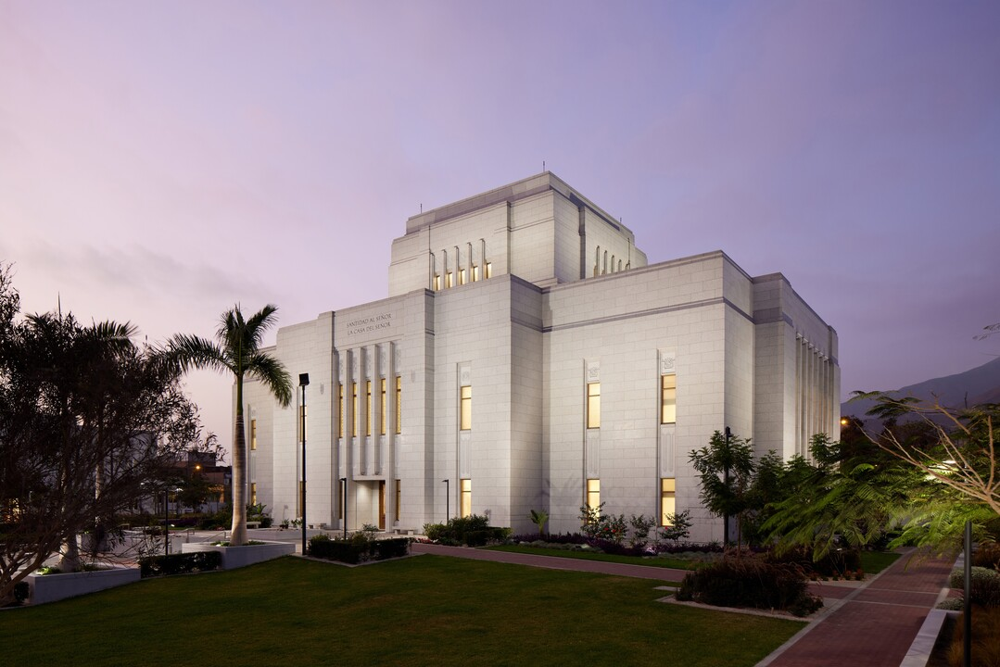

Temple Album
Home
Old
New
Large
Small
Home
Salt Lake Temple
Cochabamba Bolivia Temple
La Paz Bolivia Temple
Santa Cruz Bolivia Temple
San Diego California Temple

Lima Peru Los Olivos Temple
Lima Peru Temple
Trujillo Peru Temple
Kirtland Temple